My Journey.
Click each card to see details · Swipe for more
2025 – On Going
Research Intern — National Formosa University
Department of Computer Science & Information Engineering
Yunlin, Taiwan 🇹🇼
- UAV-based vehicle detection & traffic monitoring with YOLOv11 + DeepSORT.
- Edge AI inference on Raspberry Pi 5 for real-time illegal parking detection.
- Aerial image analysis for smart city transportation applications.
Nov 2024 – Jan 2025
LOGRAK — Finalist
State Polytechnic of Malang (POLINEMA)
Malang
- Proposed innovative renewable energy solution through waste processing.
- Demonstrated presentation and problem-solving skills at national level.
May 2025 – June 2025
SimonLab — Front End Developer
Electronic Engineering Polytechnic Institute of Surabaya (EEPIS)
Surabaya
- Developed responsive dashboard for real-time IoT laboratory monitoring.
- Translated Figma UI/UX designs into functional frontend with clean design system.
- Enabled dynamic data updates via API integration and polling.
Nov 2025 – Dec 2025
FTTH Network Design — Network Design Engineer
Electronic Engineering Polytechnic Institute of Surabaya (EEPIS)
Surabaya
- Designed scalable FTTH network covering 121 homes using GPON architecture.
- Produced technical drawings via Google Earth mapping and AutoCAD drafting.
- Developed capacity planning, splitter allocation, and full Bill of Quantity (BoQ).
2025
5G SA/NSA Private Network — Network Programmer
National Formosa University
Taiwan
- Built and tested 5G SA/NSA private network using USRP-based SDR with Open5GS + srsRAN.
- Debugged attach procedure and validated LTE protocol stack (RRC, NAS, S1AP).
- Successfully enabled full communication services: internet, VoIP, and SMS.
2025
AI Fraud Detection Model — ML Researcher
Otoritas Jasa Keuangan (OJK)
Indonesia
- Developed ML models to detect money laundering in e-wallet transactions.
- Processed 6.3M+ transaction records with preprocessing and feature engineering.
- Achieved best performance with XGBoost: 99.5% accuracy.
2025
NISTRO — Stroke Detection System
PKM-KC
Indonesia
- Designed non-invasive stroke detection system using MAX30102 sensor.
- Developed predictive models for health indicators and stroke risk classification.
- Created system architecture and full technical documentation for PKM proposal.
2025
Technical & Operations Coordinator
POMN Program
Indonesia
- Coordinated technical execution for community development program.
- Supported MSME data mapping and digital marketing improvements.
- Managed reporting, documentation, and evaluation processes.
2024
Career Development Program — E-BIO
Secretariat Division Committee
EEPIS · Surabaya
- Managed administrative and logistical aspects of internal events.
- Coordinated documentation and official correspondence for the program.
2023
Career Development Program — E-BIO
EEPIS Bidikmisi Organization
EEPIS · Surabaya
- Participated in personal value and professional development workshop.
Sep 2024
Multimedia Creative Workshop — E-BIO
Participant
EEPIS · Surabaya
- Learned graphic design and visual communication fundamentals.
- Practiced camera operation and basic photography techniques.
Research Intern — National Formosa University
Department of Electrical Engineering & Electrical Engineering · Yunlin, Taiwan
Research Intern — Edge AI & UAV Systems
About the Role
Selected as a research intern at National Formosa University (NFU), Taiwan, working on an Edge AI system for UAV-based intelligent traffic monitoring. The project focuses on deploying real-time object detection and tracking directly on edge devices, enabling smart city transportation applications without cloud dependency.
Technical Work
- Implemented YOLOv11 for high-accuracy vehicle detection from UAV aerial footage.
- Integrated DeepSORT tracking algorithm for multi-object trajectory analysis across video frames.
- Deployed full inference pipeline on Raspberry Pi 5 for on-device Edge AI processing.
- Developed illegal parking detection logic using spatial zone mapping and dwell-time analysis.
- Evaluated model performance metrics (mAP, FPS) under real-world aerial conditions.
Technologies Used
LOGRAK — Creative Concept & Design Competition
State Polytechnic of Malang (POLINEMA) · Malang
Finalist — Innovation in Renewable Energy
Documentation
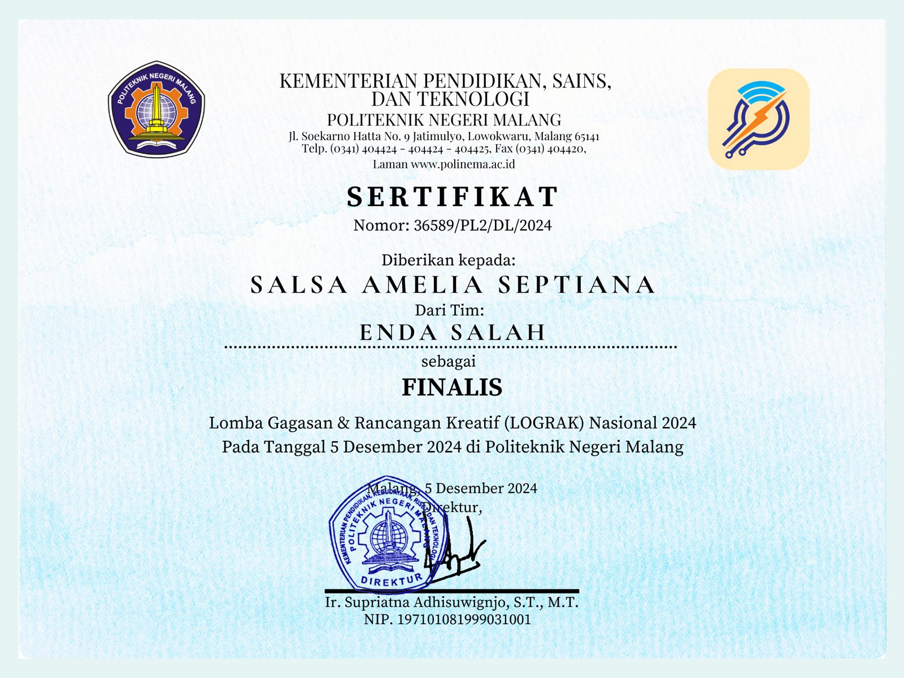
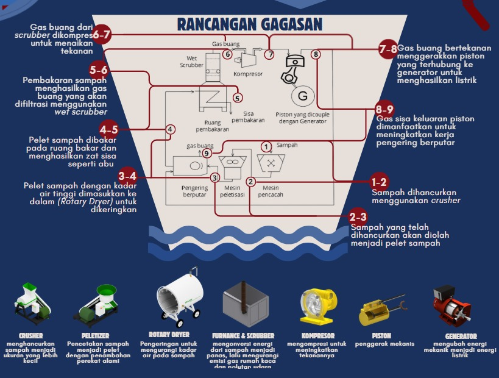
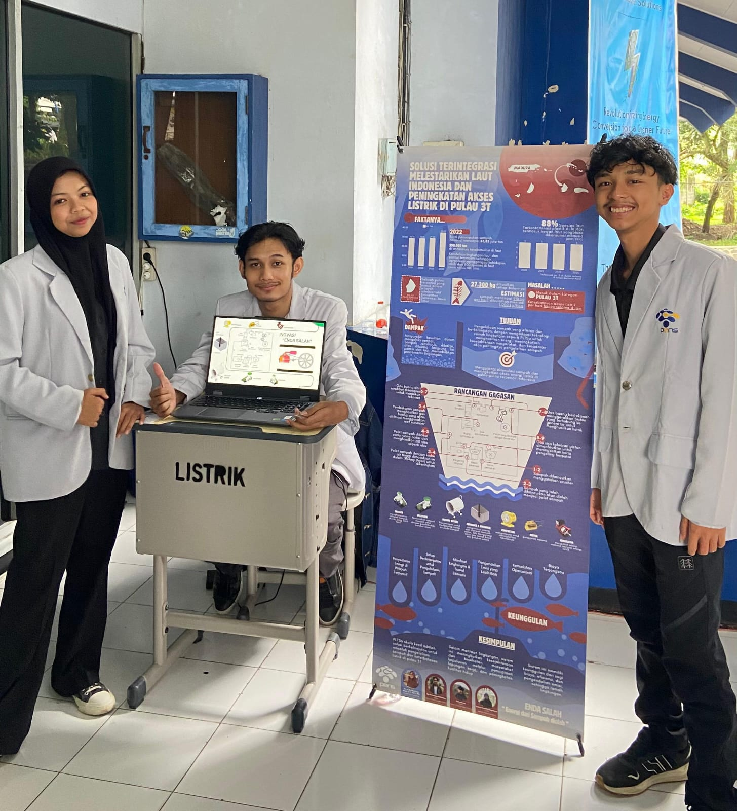
About the Competition
LOGRAK is a national-level creative idea and design competition hosted by the State Polytechnic of Malang, challenging students to present innovative real-world solutions in fields including renewable energy.
What I Did
- Proposed an innovative renewable energy solution leveraging waste processing technology.
- Presented the concept before a national jury panel.
- Demonstrated environmental awareness and engineering problem-solving capabilities.
Achievement
Reached Finalist standing in the Innovation in Renewable Energy category at the national level.
Career Development Program — E-BIO
EEPIS Bidikmisi Organization (E-BIO) · EEPIS Surabaya
Workshop Participant
About the Program
The Career Development Program is a professional and personal growth initiative organized by E-BIO for scholarship recipients at EEPIS, focused on developing career readiness and professional values.
What I Did
- Participated in personal value development workshops for professional growth.
- Actively engaged in self-development and soft-skills sessions.
Career Development Program — E-BIO
EEPIS Bidikmisi Organization (E-BIO) · EEPIS Surabaya
Secretariat Division Committee Member
About the Program
In 2024, contributed as a Secretariat Division committee member for the Career Development Program, responsible for smooth administration and event logistics.
What I Did
- Managed administrative and logistical aspects of internal organizational events.
- Handled documentation and official correspondence for the program.
- Ensured smooth inter-division coordination among committee members.
Multimedia Creative Workshop — E-BIO
EEPIS Bidikmisi Organization (E-BIO) · EEPIS Surabaya
Participant
About the Workshop
A creative training program focused on developing graphic design, visual communication, and photography skills for E-BIO student members.
What I Learned
- Fundamentals of graphic design and visual communication.
- Practical camera operation skills.
- Basic professional photography techniques.
SimonLab — IoT Laboratory Monitoring System
Electronic Engineering Polytechnic Institute of Surabaya (EEPIS) · Surabaya
Front End Developer
Documentation
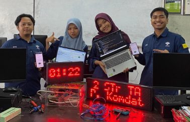
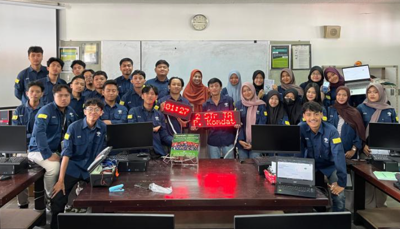
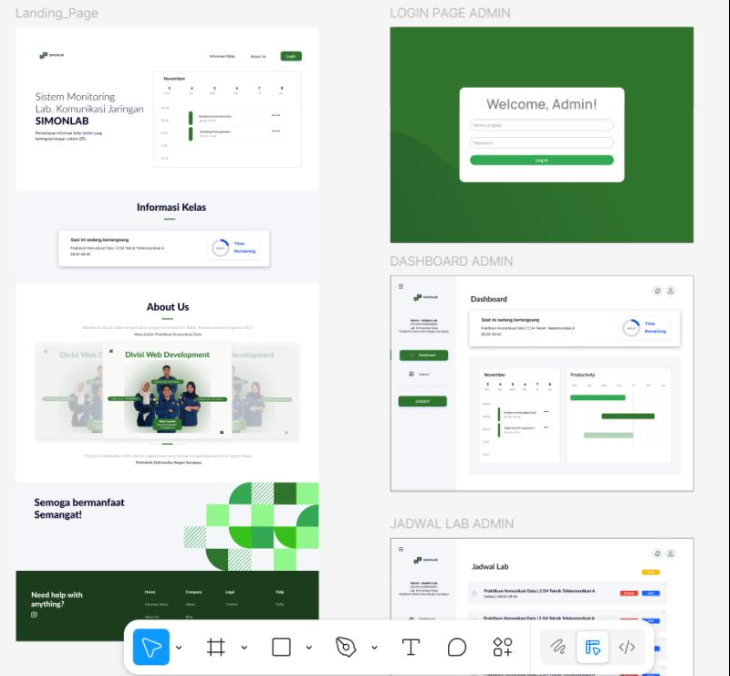
About the Project
SimonLab is an IoT-based laboratory monitoring system designed to track laboratory conditions and activities in real time. The project centered on building an interactive dashboard for monitoring data, scheduling lab usage, and visualizing information responsively.
What I Did
- Designed the dashboard UI/UX using Figma with a user-centered design approach.
- Implemented the design into a web interface using HTML, CSS, and JavaScript.
- Built interactive lab schedule visualization features.
- Integrated real-time data updates using API polling for live system monitoring.
- Built a responsive, consistent interface using a component-based design system.
Achievements
- Delivered a fully responsive IoT monitoring dashboard across all device sizes.
- Implemented real-time data updates via API polling for accurate live monitoring.
- Produced a user-friendly interface enabling intuitive lab data interpretation.
FTTH Network Design — Pakuwon City, Surabaya
Electronic Engineering Polytechnic Institute of Surabaya (EEPIS) · Surabaya
Network Design Engineer
Documentation
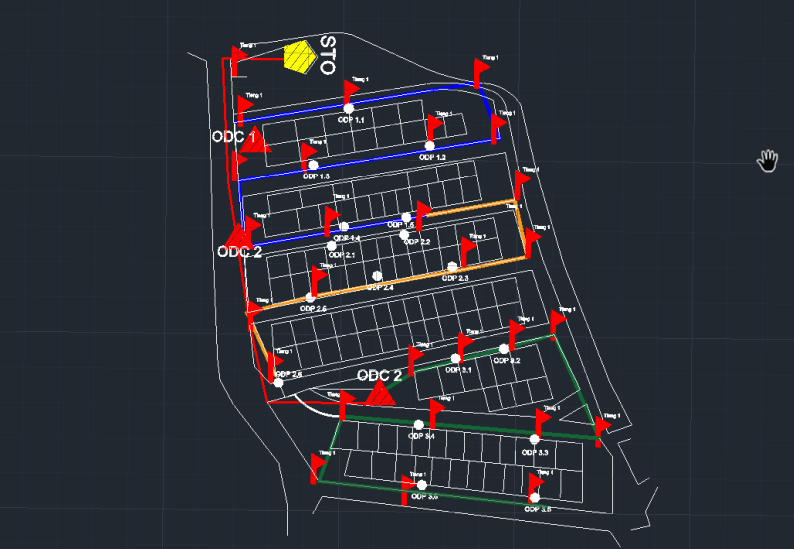
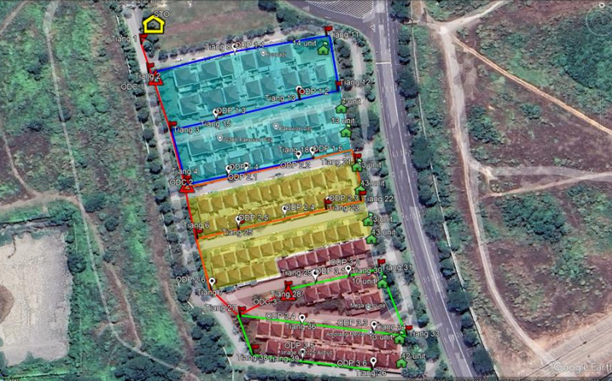
About the Project
End-to-end FTTH (Fiber to the Home) network design for Pakuwon City residential area, Surabaya, using GPON architecture. Scope included route planning, capacity calculation, technical drawing, and full cost estimation for aerial topology deployment.
What I Did
- Performed network mapping and route planning using Google Earth for cable paths and device placement.
- Created detailed technical network drawings using AutoCAD based on mapping results.
- Designed GPON architecture: OLT, ODC, ODP, and ONT placement.
- Calculated port allocation, splitter distribution (1:4 and 1:8), and cable feeder requirements.
- Compiled a full Bill of Quantity (BoQ) for materials and installation cost estimation.
- Documented the entire design as a reference for FTTH network implementation.
Achievements
- Designed FTTH network covering 121 homes with 6 active GPON ports.
- Produced optimal design with 3 ODCs and 17 ODPs for network distribution.
- Estimated cable requirements: ~300m feeder and ~1.2km aerial distribution cable.
- Produced BoQ with estimated material cost ~IDR 82.6M and installation ~IDR 94.2M.
5G Private Network Deployment & Testing
National Formosa University (NFU) · Taiwan
Network Programmer
Documentation
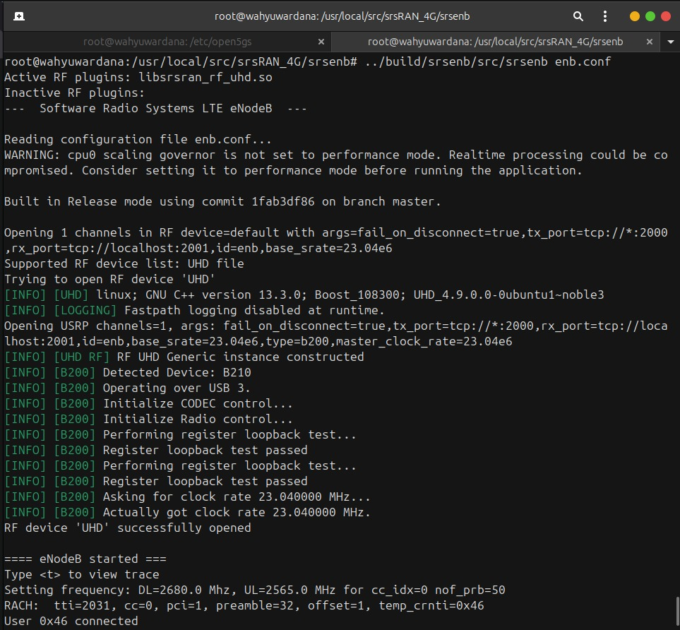
About the Project
Implementation and testing of a private 5G network using Software Defined Radio (SDR) technology. The system covered eNodeB deployment (USRP-based), EPC integration via Open5GS + srsRAN, and full end-to-end service testing.
What I Did
- Configured 5G private network environment based on SDR (USRP) on Ubuntu Linux.
- Implemented eNodeB using srsRAN and integrated with Open5GS EPC.
- Tested 5G protocol layers: RRC, NAS, S1AP.
- Debugged UE attach procedures on the 5G network.
- Validated full communication services: internet data, VoIP, and SMS.
Achievements
- Successfully built a fully functional end-to-end private 5G network.
- Validated inter-layer communication in the 5G protocol stack.
- Enabled complete communication services (data, voice, messaging) over private 5G.
AI Model for Money Laundering Detection
Otoritas Jasa Keuangan (OJK) · Indonesia
Machine Learning Researcher
Documentation
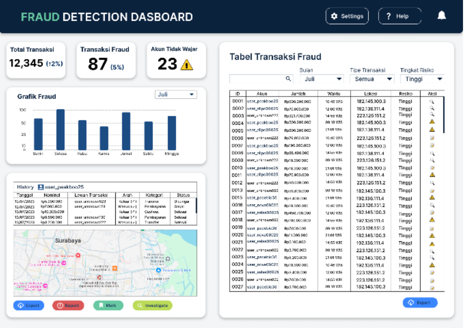
About the Project
Research to develop an AI model for detecting money laundering activity in e-wallet systems using the large-scale PaySim dataset.
What I Did
- Performed data preprocessing and outlier handling on 6.3M+ transaction records.
- Analyzed transaction feature correlations and engineered predictive features.
- Trained and evaluated multiple ML models (Logistic Regression, Random Forest, XGBoost).
- Developed a prototype fraud monitoring dashboard.
Achievements
- Effectively processed a dataset of 6.3 million financial transactions.
- Achieved best performance using XGBoost with 99.5% accuracy on fraud detection.
- Delivered a working model for identifying suspicious transaction patterns.
NISTRO — Non-Invasive Stroke Detection System
PKM-KC · Indonesia
System Concept Developer
Documentation
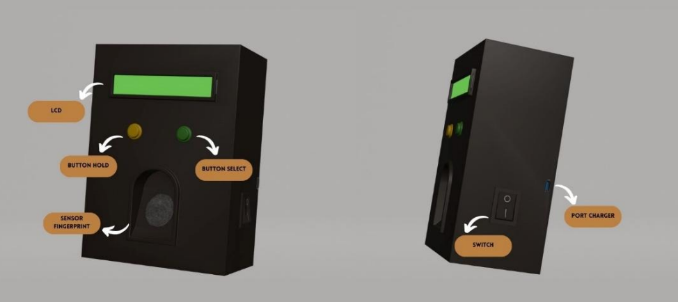
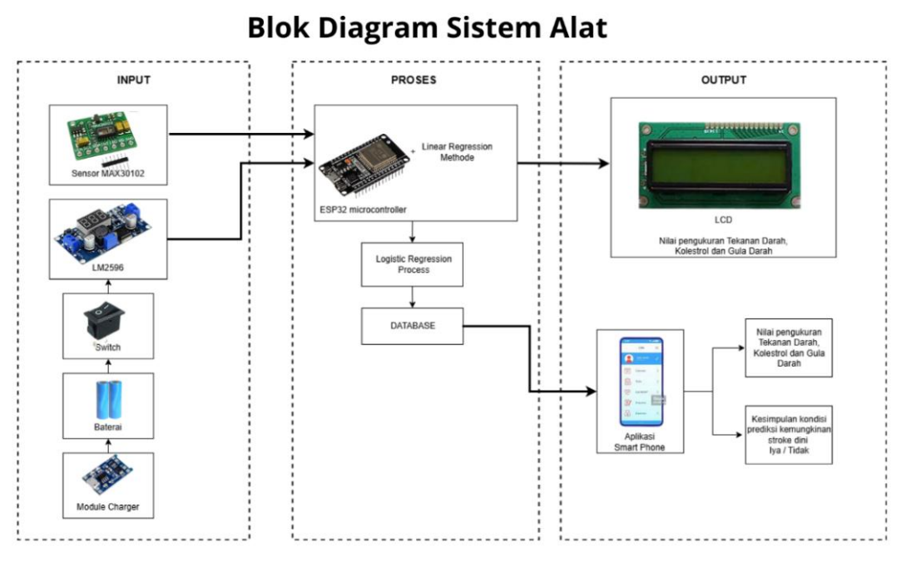
About the Project
NISTRO is a non-invasive early stroke detection system based on the MAX30102 photoplethysmography sensor and IoT architecture, designed to predict stroke risk through physiological data analysis.
What I Did
- Designed the IoT system architecture and sensor data flow.
- Developed regression and classification predictive models for health indicators.
- Created system diagrams and data flow documentation.
- Compiled full technical documentation for the PKM proposal submission.
Achievements
- Produced a complete IoT-based healthcare system concept.
- Integrated sensor, data pipeline, and prediction into a unified system design.
- Delivered comprehensive documentation for the PKM-KC national student program.
POMN Program — Community Development
Indonesia
Technical & Operations Coordinator
Documentation
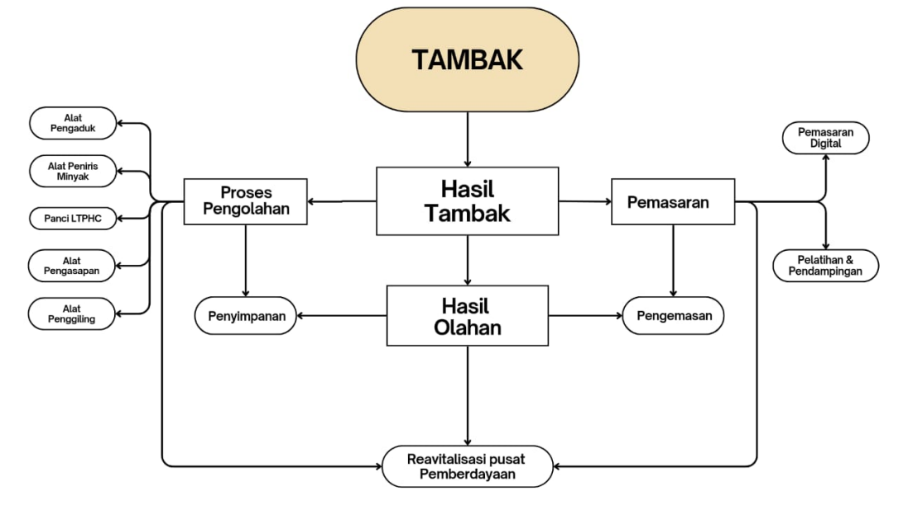
About the Program
A community development program focused on empowering MSMEs (Micro, Small, and Medium Enterprises) through technical and operational support.
What I Did
- Performed MSME clustering and data mapping for the program area.
- Supported digital marketing improvements and production process optimization.
- Coordinated field activities and volunteer teams.
- Compiled program reports and documentation.
Achievements
- Contributed to improved MSME operational efficiency.
- Produced structured program documentation for evaluation.
- Supported effective program implementation across multiple sites.
2024 – 2025
EEPIS English Community (E2C)
Media and Information Division
EEPIS · Surabaya
- Managed digital media content and event documentation.
- Promoted student engagement through English and cross-cultural communication.
2024 – 2025
PENS International Cooperation Office (PICO)
Workshop Division Member
EEPIS · Surabaya
- Supported international workshop logistics and coordination.
- Promoted global cooperation events at EEPIS.
2024 – 2025
EEPIS Bidikmisi Organization (E-BIO)
Head of PENGMAS Department
EEPIS · Surabaya
- Led community service programs for social impact.
- Coordinated volunteers and local community partnerships.
EEPIS English Community (E2C)
EEPIS · Surabaya
Media and Information Division Member
Documentation
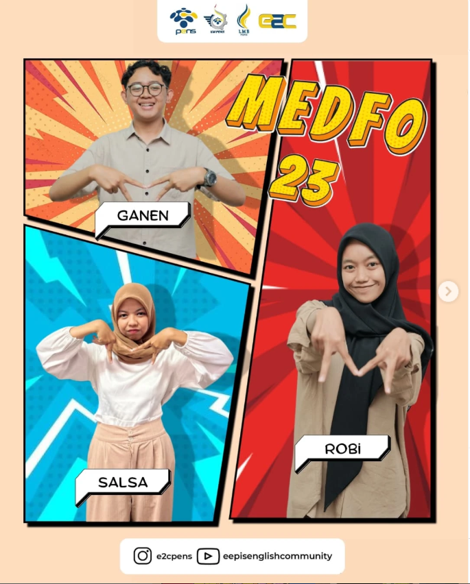
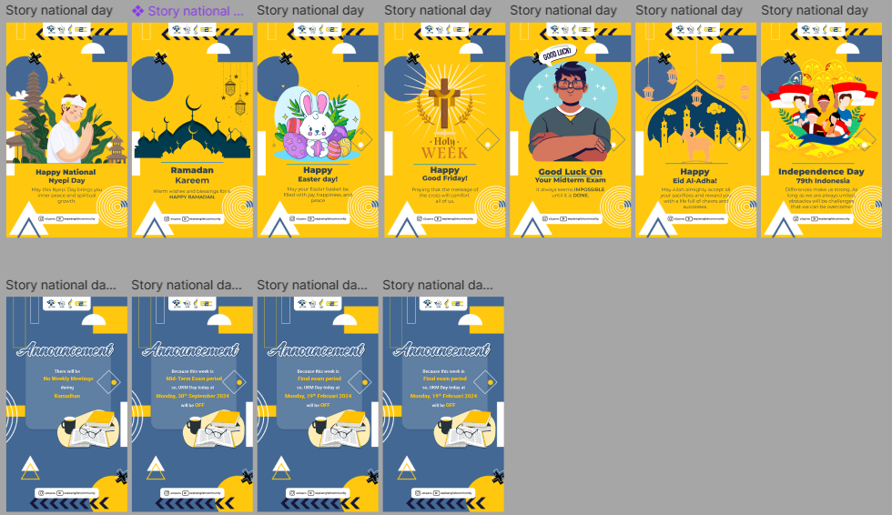
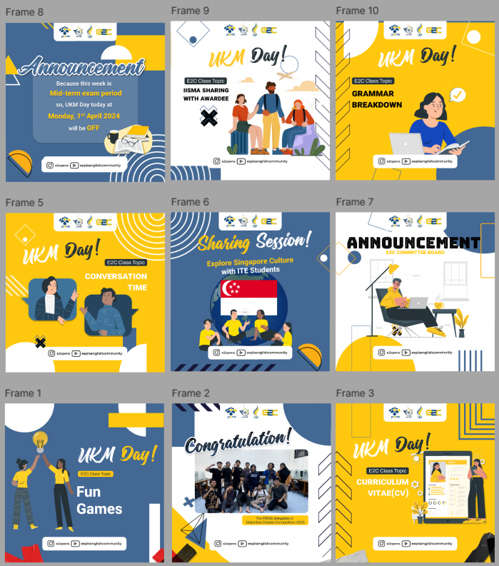
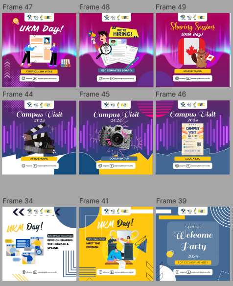
About the Organization
E2C (EEPIS English Community) is a student community focused on English language development and cross-cultural engagement at EEPIS.
What I Did
- Managed digital media content and community event documentation.
- Promoted student engagement and cross-cultural communication through English.
- Contributed to creative content for the organization's social media platforms.
PENS International Cooperation Office (PICO)
EEPIS · Surabaya
Workshop Division Member
About the Organization
PICO is the international cooperation office at EEPIS, facilitating international relationships and programs between EEPIS and overseas institutions.
What I Did
- Supported logistics and participation in international workshops.
- Promoted global cooperation events at EEPIS.
- Assisted coordination of international programs involving EEPIS students.
EEPIS Bidikmisi Organization (E-BIO)
EEPIS · Surabaya
Head of Community Service Department (PENGMAS)
Documentation
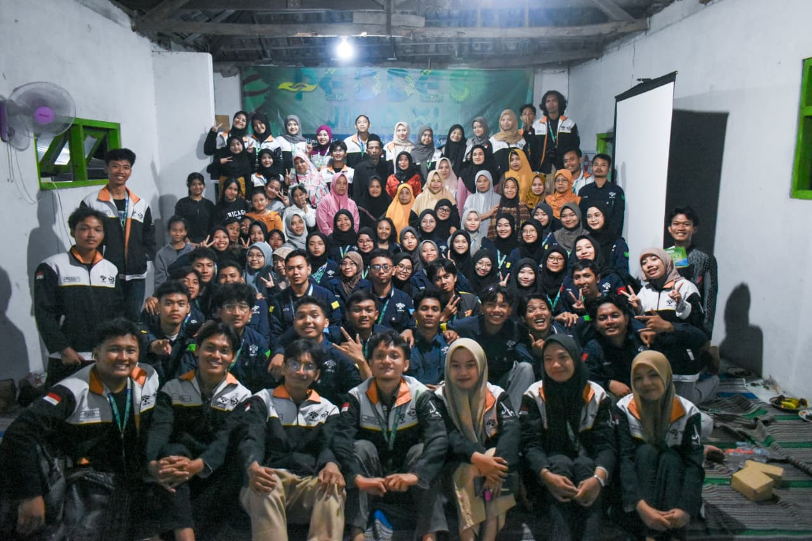
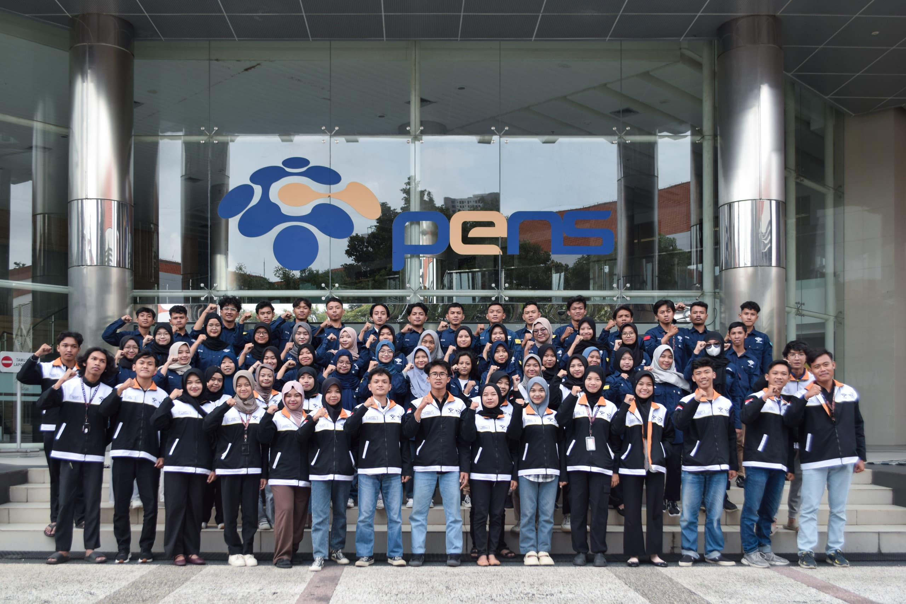
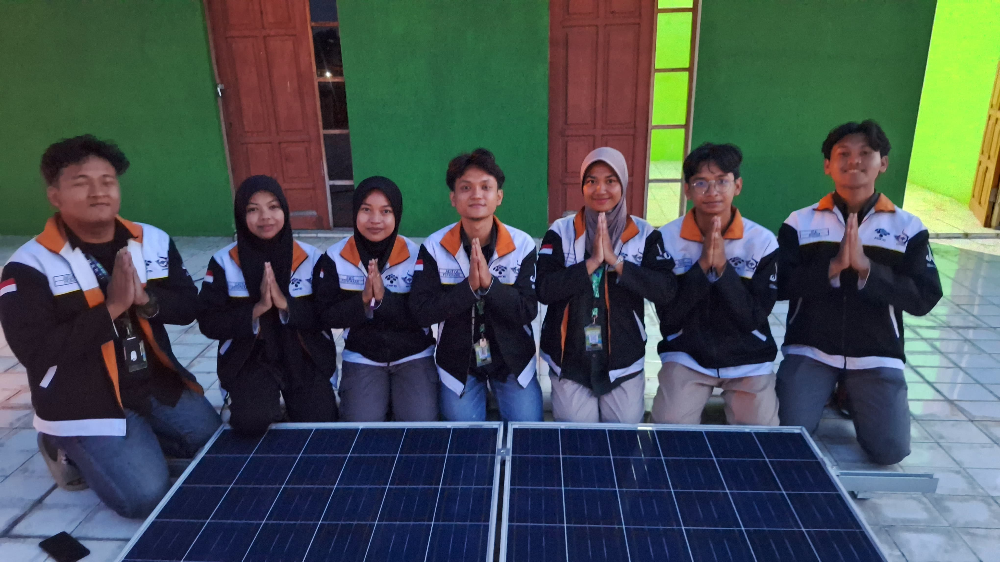
About the Organization
E-BIO is the scholarship recipient student organization at EEPIS focused on human resource development, social activities, and student empowerment.
What I Did
- Led planning and execution of community service programs focused on social impact and empowerment.
- Coordinated volunteers and managed partnerships with local communities.
- Ensured continuity of ongoing service projects.